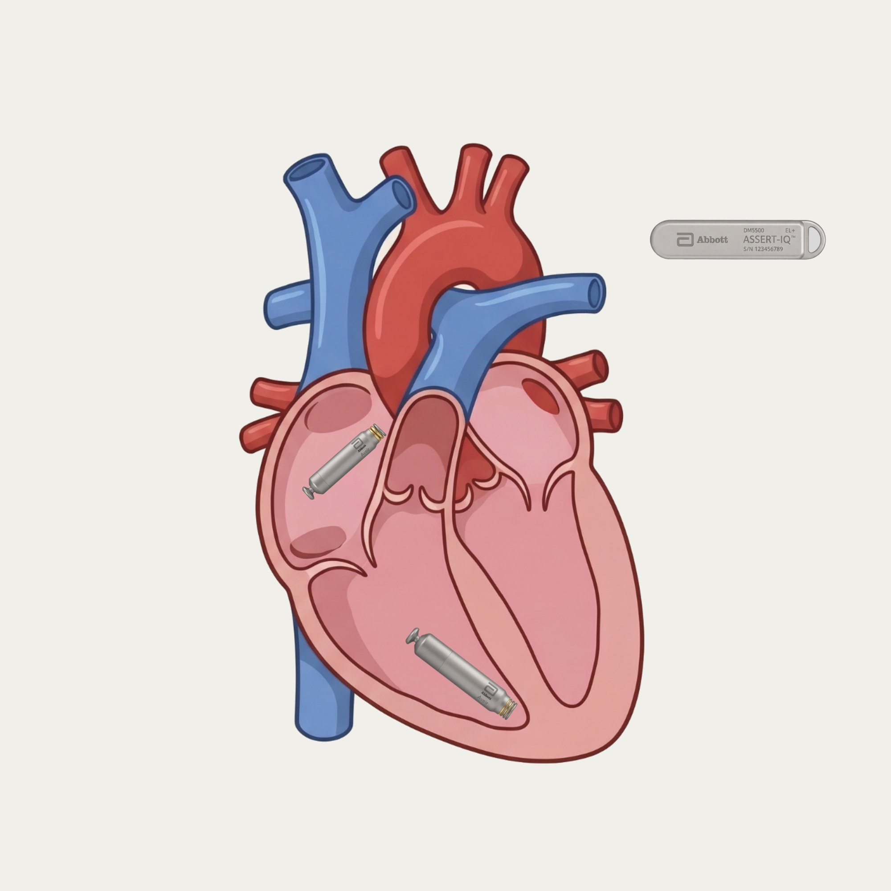
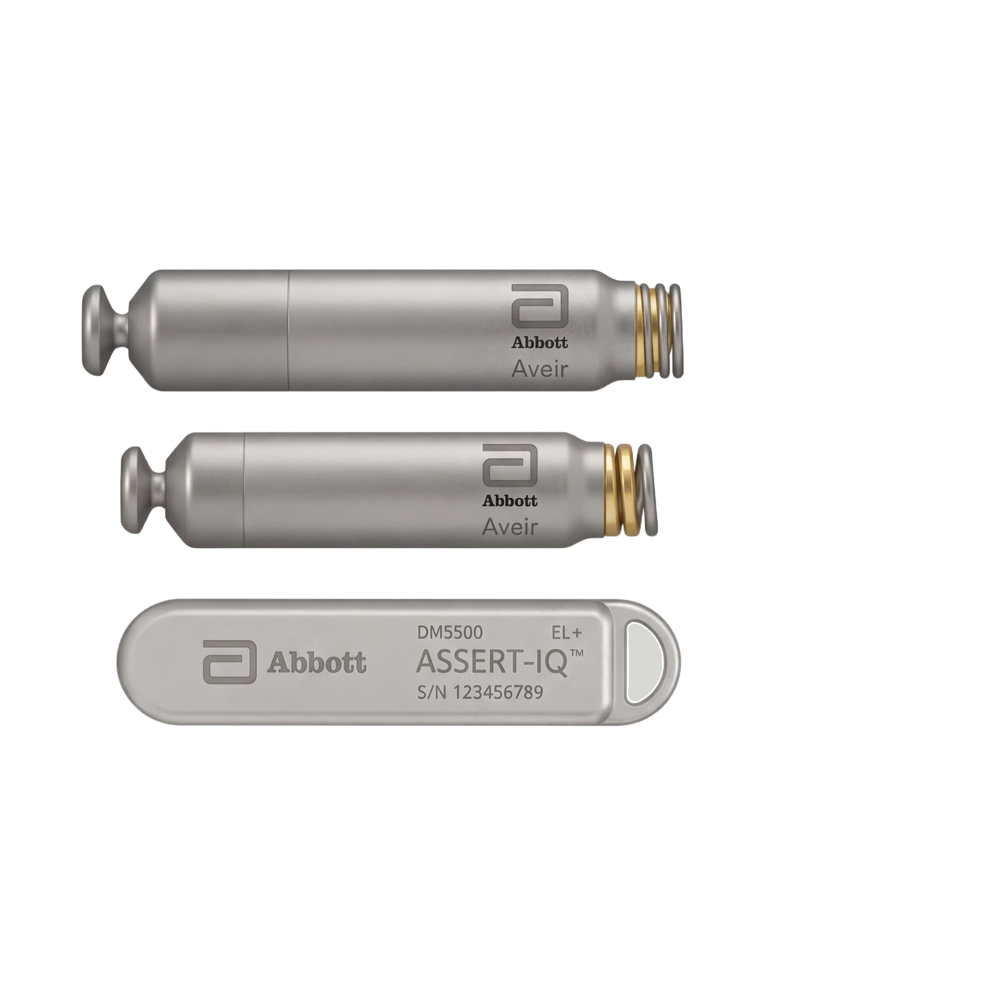

Biomedical engineer improving healthcare outcomes through tissue, electrical, mechanical, and software engineering.
Skylar-Scott Lab, Stanford2025–Present
Researching bioprinting approaches for vascularized cardiac patches to treat heart failure and heart disease.
Abbott · Sunnyvale, CA2021–2025
End-to-end product design and development of the first dual-chamber leadless pacemaker, from new feature design through FDA regulatory submission.
Spearheaded end-to-end systems integration, verification, FDA 510(k) submission, and launch of Abbott's next-gen Assert IQ ICM.

Columbia Senior CapstoneSep 2020 – May 2021
Handheld device for non-invasive, automated, standardized CRT measurement — rapid quantitative peripheral perfusion readings for ICU use.
Columbia BMEMar – May 2020
Implemented deep learning networks to detect COVID-19 in chest X-rays with high accuracy using transfer learning before substantial data was available.
Columbia BMEOct – Dec 2020
Quantitatively modeled a tumor-targeting bacterial therapy synthetic biology system to improve localization and dosage control.
Abbott · Sunnyvale, CAJuly 2021 – June 2025

Hologic Inc. · Marlborough, CTSummer 2020
Hillman Laboratory, Columbia University2018–2020
Auscultech Dx · Children's National Hospital, DCSummer 2018
Stanford University2025 – Present
Columbia University SEASClass of 2021